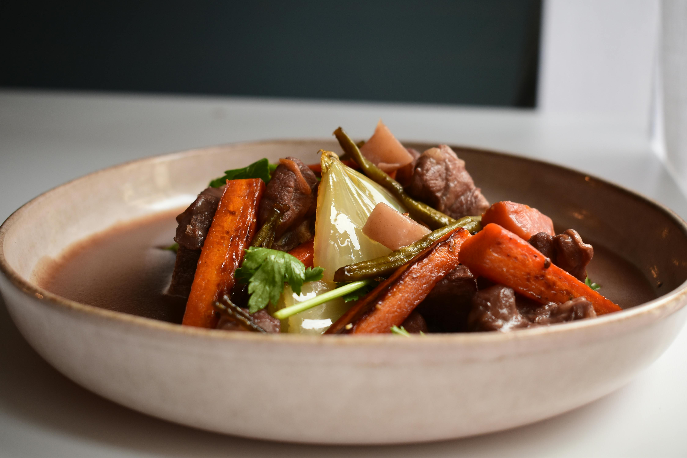

How to Make Hearty Viking Stew

Hearty and rustic, Vikings relied on this traditional stew
to fuel their bodies and souls on harsh winter nights. Bursting with the robust flavors, Viking Stew is traditionally simmered
in a rich broth of beef, lamb, root vegetables, thyme, and juniper berries. This hearty meals perfectly captures
the spirit of the Old Norse hearth- simple, nourishing, and sublime on cold nights by the fire.
Ingredients
- 4 1/2 pounds boneless pork shoulder roast, cut into 2- to 3-inch chunks
- 3 teaspoons kosher salt, or to taste
- 1/4 cup honey
- 1 cup fresh blackberries, or other fresh berries
- 2 tablespoons lingonberry jam
- 6 cups cold water
- 3 cloves garlic, peeled
- 1 teaspoon dried thyme
- 1 teaspoon ground coriander
- 1 yellow onion, cut into large dice
- 2 leeks, washed thoroughly, cut into 1-inch pieces
- 10 large brown mushrooms, halved
- 1 small green cabbage, cut into 1-inch pieces
- 3 large carrots, peeled and cut into 2-inch pieces
- 2 fennel bulbs, halved and cut into 1/4-inch strips
- 1/4 cup torn cilantro leaves
- 1/4 cup chopped fresh dill
- 2 tablespoons fresh thyme leaves
Directions
- While stew is coming to a boil, add garlic, dry thyme, and ground coriander. When mixture comes to a rolling boil, reduce heat to low, and simmer gently for 45 minutes, stirring occasionally.
- Stir in onion, leeks, and mushrooms, and simmer until meat is almost, but not quite fork tender, about 45 minutes more.
- Stir in cabbage, carrots, and fennel; continue to simmer until vegetables and meat are very tender, about 30 minutes.
- Season to taste with salt. Serve with fresh herbs scattered over the top.
Home